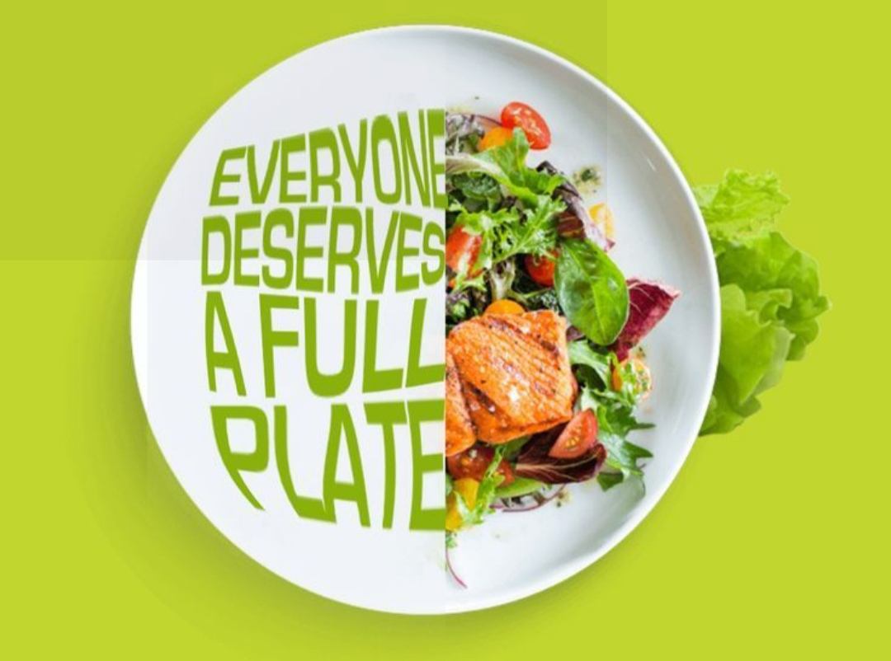
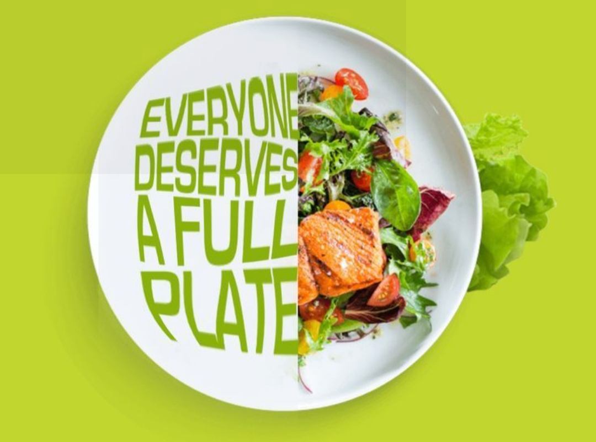

Together We Can Fight Hunger
MealBridge connects food donors, NGOs, farmers, communities and those in need- reducing waste, get nutririous food and bringing hope to communities.
MealBridge connects food donors, NGOs, farmers, communities and those in need- reducing waste, get nutririous food and bringing hope to communities.
We collect suplus food from restaurants , markets and homes then distribute it to families and communities facing hunger. Every meal saved brings hope to a table in need.
We organize community workshops that teach familes about balanced diets, food hygiene, and affordable nutrition. Knowledge is the first step to food security.
Small farmers recieve training, tools and access to digital markets. This ensures fair trade, reduces post-harvest losses, and strngthens local food systems.
We provide nutritious meals in underpriviledged schools to boost attendence and learning outcomes ensuring no child studies on an empty stomach.
Community-run centers where people came together to cook, share and learn sustainable food practices.
Together we are building a hunger-free future. Every number below represents lives touched, meals shared, and hopes restored across Uganda.
Meals Distributed
Communities Reached
Famers supported
Partner Schools